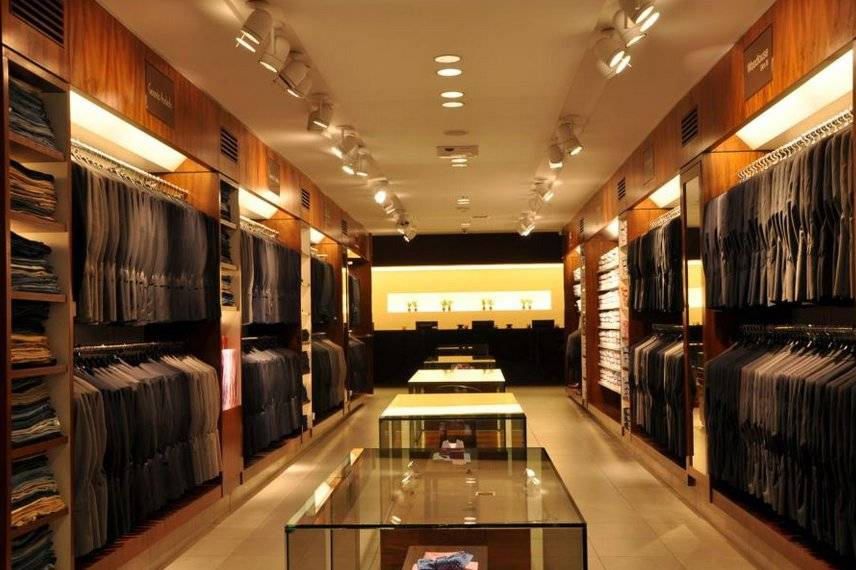
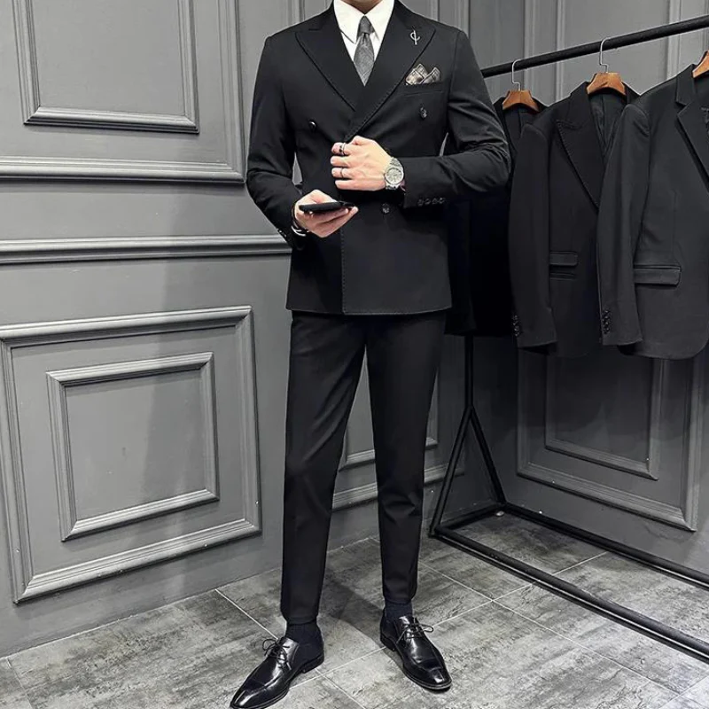
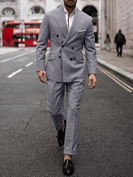
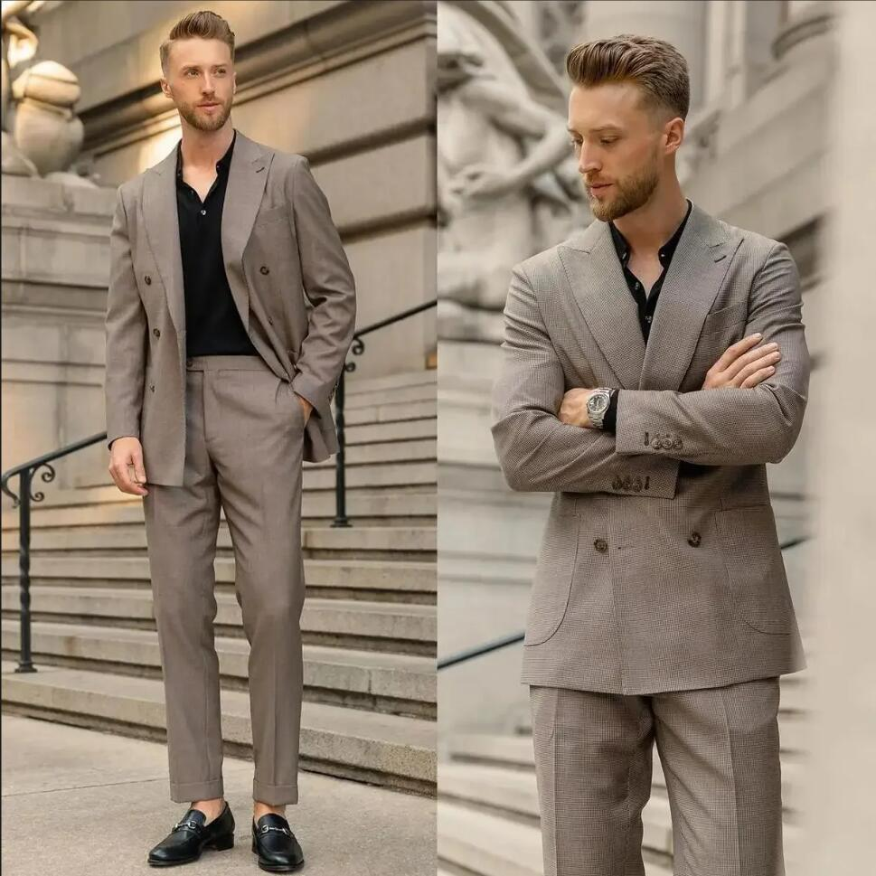

Bem-vindo à nossa loja de ternos! Aqui você encontra ternos elegantes e sob medida para todas as ocasiões. Qualidade e estilo para você se destacar.

Elegância atemporal para eventos formais e reuniões.

Estilo moderno e versátil para o dia a dia corporativo.

Um clássico com toque contemporâneo para todas as ocasiões.
Corte ajustado para um visual mais moderno e elegante.